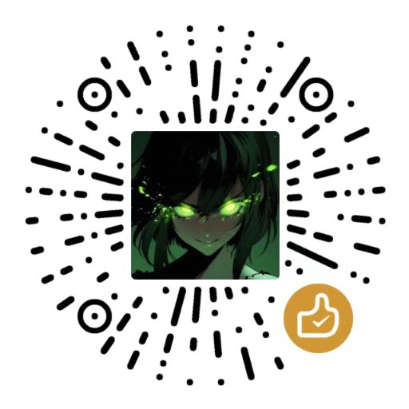

ShaiZero
GitHub
请喝咖啡
ShaiZero
轮盘式窗口快速切换
ShaiZero 是一个 Windows 窗口快速切换工具。按住
Alt
在桌面任意位置按下鼠标左键，轮盘展开，指针停在某一格松手，对应窗口就到前台；拖回圆心或右键取消。
核心特性
单 exe，绿色免安装，不需要管理员权限
Windows 10 1809+ / 11 x64，多屏 DPI 适配
轮盘半径、扇区间距、动画、主题均可调
不需要 .NET / VC++ 运行库，纯原生 Win32
快捷键
呼出轮盘
Alt
+ 鼠标左键
取消轮盘
右键 / 拖回圆心
打开设置
Ctrl
+
T
下载最新版
GitHub 仓库
请作者喝咖啡
--:--
----/--/--
Alt
+
鼠标左键
呼出轮盘 · 拖到扇区松开即可切换
请作者喝咖啡
✕

微信扫码 · 金额随意
您的支持是持续更新的动力 ♥